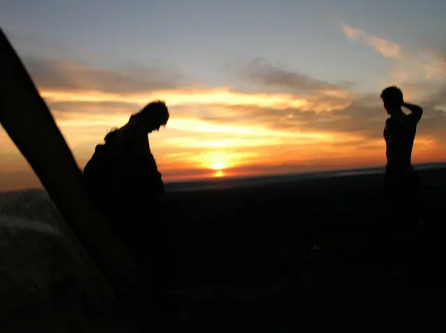
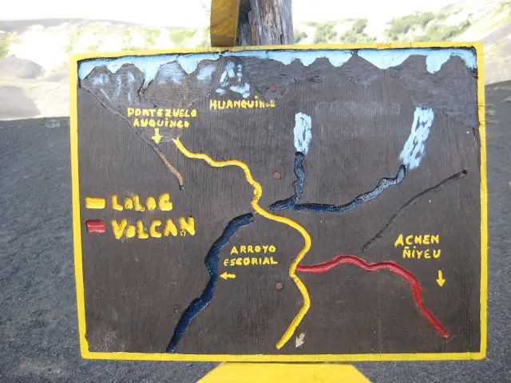

// FUERA DEL TRABAJO
El cajón del azul | Trekking
Si hay un lugar para perderse es en el Cajón del Azul, es más grande de lo que parece, siempre queda algún lugar por conocer.
20 de enero de 2008 · 1 minuto de lectura

Un camino bien marcado, 10km hasta el refugio. Nada que no se pueda hacer con un buen grupo de amigos.
El color que tienen las aguas en estos lugares es algo muy difícil de describir o captar con algún medio electrónico.
Si no alcanza con un poco de montaña, a pocos pasos el Parque Nacional Los Alerces multiplica la apuesta con todos sus lagos, ríos y rincones.
Una vez acá, no se puede negar el paso por Esquel antes de la vuelta.
Viajes relacionados

Paisajes Jujeños
Grises, marrones, verdes, naranjas, celestes, blancos y la falta de horizonte, son todos los colores que se pueden encontrar en el Norte Argentino.
Febrero 2009
Cerro Champaquí
Llegar al punto más alto suele ser el objetivo, no deja de ser un objetivo relativo. Es la derivada nula del entorno reducido.
Enero 2010
Parque Nacional Lanín | Trekking
Desde el estrecho cruce donde se juntan el Lago Huechulafquen y el Lago Paimún, hasta Villa Lolog, hay muchas que sendas que recorrer.
Enero 2012Paisajes Jujeños
// EL SIGUIENTE PASO
TU PRODUCTO.
SU PRÓXIMA ETAPA.
Una primera conversación para entender el desafío y ver si puedo aportar valor.
↗ Hablemos de tu proyecto